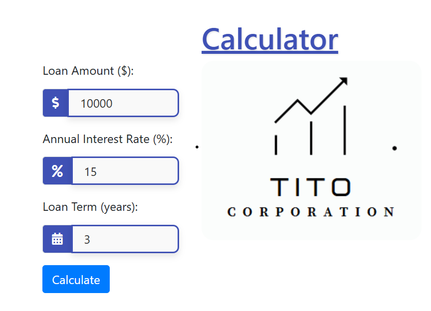

Mortgage Calculator Web Application
Welcome to my Mortgage Calculator web application. This application helps users calculate their mortgage payments based on various input parameters, including loan amount, interest rate, and loan term. The application provides a user-friendly interface and calculates the results dynamically.
Go to Website
How It Was Built
The Mortgage Calculator web application is designed to provide users with an easy-to-use tool for calculating mortgage payments. It uses HTML for the structure, CSS for styling, and JavaScript for the calculations and dynamic updates. Users input their loan details, and the application calculates and displays the monthly payment, total payment, and total interest.
Core Functionalities
- Dynamic Calculations: The application calculates mortgage payments based on user inputs and displays results in real-time.
- Responsive Design: The calculator is designed to work seamlessly on various devices and screen sizes.
- Input Validation: The application provides feedback on invalid inputs by changing input borders to red, ensuring accurate data entry.
- Results Display: Results are shown in a visually appealing format, replacing an initial placeholder image with calculated values.
Design Approach
The design focuses on simplicity and clarity, with a clean interface that allows users to easily input their mortgage details and view results. The use of vibrant colors and smooth transitions enhances the user experience. Bootstrap is used for additional styling and icons to improve the look and feel of input fields.
Challenges Faced
- Ensuring accurate calculations and handling edge cases such as zero or very high interest rates.
- Creating a responsive layout that works well across different devices and screen sizes.
- Implementing a visually appealing design that maintains usability and readability.